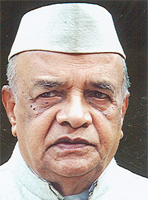

ಗಾಂಧಿವಾದಿ ಜಿ. ನಾರಾಯಣ ಇನ್ನಿಲ್ಲ
ಗಾಂಧಿವಾದಿ, ಕನ್ನಡಪರ ಹೋರಾಟಗಾರ, ಬೆಂಗಳೂರಿನ ಮಾಜಿ ಮೇಯರ್ ಡಾ. ಜಿ. ನಾರಾಯಣ (೮೯) ಅವರು ತೀವ್ರ ಹೃದಯಾಘಾತದಿಂದ ಬೆಂಗಳೂರು ನಗರದ ಜಯದೇವ ಆಸ್ಪತ್ರೆಯಲ್ಲಿ ನವಂಬರ್ ೨೦, ಭಾನುವಾರ ಮಧ್ಯಾಹ್ನ ನಿಧನರಾದರು. ಅವರು ಪತ್ನಿ ಮತ್ತು ಮೂವರು ಪುತ್ರರನ್ನು ಅಗಲಿದ್ದಾರೆ. ಅವರ ಇಚ್ಛೆಯಂತೆ ಮದ್ದೂರು ತಾಲ್ಲೂಕು ದೇಶಹಳ್ಳಿಯಲ್ಲಿ ಅವರ ಅಂತ್ಯಕ್ರಿಯೆ ನಡೆಯಿತು.
೧೯೨೩ ರಲ್ಲಿ ಮಂಡ್ಯ ಜಿಲ್ಲೆಯ ಮದ್ದೂರು ತಾಲ್ಲೂಕಿನ ದೇಶಹಳ್ಳಿಯಲ್ಲಿ ಜನಿಸಿದ ಇವರು, ೧೯೪೦ ರಲ್ಲಿ ಪ್ರೌಢಶಾಲಾ ಶಿಕ್ಷಣಕ್ಕೆ ವಿದಾಯ ಹೇಳಿ ೧೯೪೨ ರಲ್ಲಿ ಗಾಂಧೀಜಿಯ ಕರೆಗೆ ಓಗೊಟ್ಟು ಕ್ವಿಟ್ ಇಂಡಿಯಾ ಚಳವಳಿಯಲ್ಲಿ ಪಾಲ್ಗೊಂಡರು. ೧೯೫೧ ರಲ್ಲಿ ವಿನೋದ ಮಾಸ ಪತ್ರಿಕೆ ಪ್ರಾರಂಭಿಸಿದ ಇವರು ೧೯೫೭ ರಲ್ಲಿ ಮೊದಲ ಬಾರಿಗೆ ಬೆಂಗಳೂರು ನಗರಸಭೆಯ ಸದಸ್ಯರಾಗಿ ಚಾಮರಾಜ ಪೇಟೆ ಕ್ಷೇತ್ರದಿಂದ ಆಯ್ಕೆಯಾದ ಇವರು ೧೯೬೪ ರಲ್ಲಿ ಬೆಂಗಳೂರು ನಗರಸಭೆಯ ಮೇಯರ್ ಸ್ಥಾನ ಅಲಂಕರಿಸಿ ಬೆಂಗಳೂರು ನಗರಕ್ಕೆ ಕಾವೇರಿ ನೀರು ಕುಡಿಯುವ ಯೋಜನೆಯಲ್ಲಿ ಪ್ರಮುಖ ಪಾತ್ರ ವಹಿಸಿದರು. ೧೯೬೯ ರಲ್ಲಿ ಕನ್ನಡ ಸಾಹಿತ್ಯ ಪರಿಷತ್ತಿನ ಅಧ್ಯಕ್ಷತೆ ವಹಿಸಿದ ಇವರು ಲೇಖಕಿಯರಿಗೆ ಉತ್ತಮ ವೇದಿಕೆ ಕಲ್ಪಿಸುವ ಉದ್ದೇಶದಿಂದ ಕರ್ನಾಟಕ ಲೇಖಕಿಯರ ಸಂಘ ಹುಟ್ಟುಹಾಕಿದರು. ಎರಡು ಬಾರಿ ಕನ್ನಡ ಸಾಹಿತ್ಯ ಪರಿಷತ್ನ ಚುಕ್ಕಾಣಿ ಹಿಡಿದಿದ್ದ ನಾರಾಯಣ ರವರು ಮಂಡ್ಯ ಸಾಹಿತ್ಯ ಸಮ್ಮೇಳನದ ಅಧ್ಯಕ್ಷ ಸ್ಥಾನಕ್ಕೆ ಪ್ರಥಮ ಬಾರಿಗೆ ಮಹಿಳಾ ಸಾಹಿತಿ ಜಯದೇವಿ ತಾಯಿ ಲಿಗಾಡೆ ಅವರನ್ನು ಆಯ್ಕೆ ಮಾಡಿದರು. ಗಮಕ ಸಾಹಿತ್ಯ ಪರಿಷತ್ತಿನ ಉಗಮಕ್ಕೂ ಕಾರಣಕರ್ತರಾದ ಇವರು ೧೯೭೨ ರಲ್ಲಿ ಪ್ರಥಮ ಬಾರಿಗೆ ಅಖಿಲ ಕರ್ನಾಟಕ ಗಮಕ ಸಮ್ಮೇಳನ ನಡೆಸಿದರು. ೨೦೦೫ ರಲ್ಲಿ ಜಾನಪದ ಪರಿಷತ್ತಿನ ಅಧ್ಯಕ್ಷರಾದ ನಾರಾಯಣ ರವರು ಜಾನಪದ ಲೋಕಕ್ಕೆ ಹೊಸ ಆಯಾಮ ನೀಡಿದರು.
ಮಲೇರಿಯಾ ಹಾವಳಿ, ಕಬ್ಬಿನ ಕಥಾಂತರ, ಚಿಂತನಾ ಲಹರಿ ಮುಂತಾದ ಕೃತಿಗಳನ್ನು ರಚಿಸಿದ ಇವರು ಹಂಪಿ ವಿಶ್ವವಿದ್ಯಾನಿಲಯದ ನಾಡೋಜ ಪ್ರಶಸ್ತಿ, ಜಾನಪದ ತಜ್ಞ, ರಾಜ್ಯೋತ್ಸವ ಪ್ರಶಸ್ತಿ, ಬೆಂಗಳೂರು ವಿಶ್ವವಿದ್ಯಾನಿಲಯದ ಗೌರವ ಡಾಕ್ಟರೇಟ್ ಸೇರಿದಂತೆ ಅವರನ್ನು ಅರಸಿ ಬಂದ ಗೌರವಗಳೂ ಅಪಾರ. ಅವರ ಅಗಲಿಕೆಯಿಂದ ಹಿರಿಯ ಗಾಂಧಿವಾದಿ, ಚಿಂತಕರನ್ನು ಕಳೆದುಕೊಂಡಂತಾಗಿದೆ.
ಅಮೆರಿಕನ್ನಡ
Amerikannada
ಅಮೆರಿಕನ್ನಡ